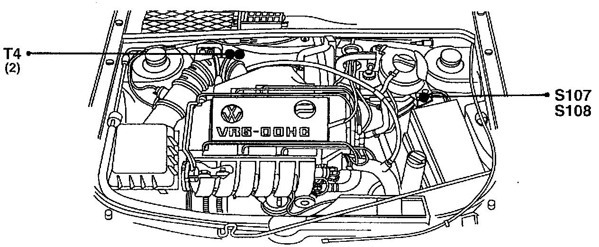
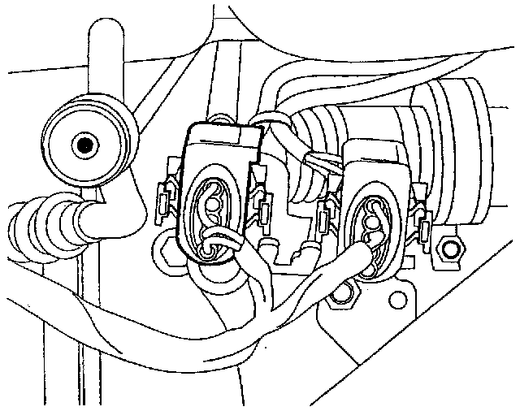

Connector Locations
S107, S108, T4:

Component Location View
T4:

Component View
T4 4-pin connector
- Black Above Steering Gear
- For heated oxygen sensor, G39
S107, S108, T4:
Component Location View
T4:

Component View
T4 4-pin connector
- Brown, Above Steering Gear
- For heated oxygen sensor 2, G108